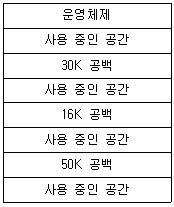
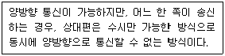
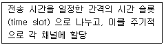

사무자동화산업기사 (2015-05-31 기출문제)
1과목: 사무자동화 시스템
1. 사무자동화 추진단계의 순서로 옳은 것은?
- 분석 → 계획 → 운용
- 계획 → 운용 → 분석
- 계획 → 분석 → 운용
- 분석 → 운용 → 계획
(정답률: 77%)

2. 사무자동화의 목표가 아닌 것은?
- 생산성 증대
- 업무 효율 증대
- 기업의 이윤 증대
- 최신 기기의 시험
(정답률: 94%)
3. 전자상거래를 위한 정보보안의 목표 3가지가 아닌 것은?
- 기밀성
- 무결성
- 효율성
- 가용성
(정답률: 64%)
4. 팩시밀리의 특징으로 옳지 않은 것은?
- 일반 전화회선을 이용하여 즉시 전송 가능하다.
- 종이원고의 내용을 원격지에서 충실하게 기록 재생할 수 있다.
- 원하는 시간에 원하는 정보 전송이 가능하다.
- 동일 내용을 한 번에 한 명의 수신자에게만 보낼 수 있다.
(정답률: 89%)
5. HDD와 같은 S-ATA인터페이스를 사용하고 기계적 부품이 아닌 반도체를 기반으로 제작되어 기존 하드디스크를 대체할 수 있는 저장장치는?
- Blu-ray
- SSD
- WORM
- RAM
(정답률: 77%)
6. 회사의 주요 경영정보를 통합 관리하기 위하여 기업 내 · 외부에 걸친 지속적인 프로세스의 개선과 실시간 정보제공을 통해 업무지연을 최소화하고 의사결정 속도를 높여 기업 경쟁력을 극대화하는 것은?
- ERP
- RLE
- RTE
- RSM
(정답률: 42%)
7. 사무자동화 환경 분석 중 내적 환경 분석의 “사무기기 분석” 사항에 해당되는 것은?
- 사무요원의 의식구조
- 자동화기기 사용 가능성
- 업무분석, 문서분석
- 업무 시스템분석
(정답률: 56%)
8. 사무자동화를 위한 과학적 사무 개선 절차로 옳은 것은?
- 문제 명확화 → 관련 사실 파악 → 개선안 마련 → 개선안 실시 → 결과 확인
- 관련 사실 파악 → 문제 명확화 → 개선안 마련 → 개선안 실시 → 결과 확인
- 개선안 마련 → 개선안 실시 → 관련 사실 파악 → 문제 명확화 → 결과 확인
- 개선안 마련 → 개선안 실시 → 문제 명확화 → 관련 사실 파악 → 결과 확인
(정답률: 41%)
9. 셋톱박스, 휴대폰, 개인휴대단말기(PDA)등 각종 정보기기를 위한 시스템 소프트웨어가 아닌 것은?
- Embedded Linux
- ATMega128
- Android
- Windows CE
(정답률: 72%)
10. COM 기기에 관한 설명으로 옳지 않은 것은?
- 자료저장기기이다.
- 종이에 인쇄된 정보를 축소 촬영하여 마이크로필름에 저장하는 기기이다.
- 대량 복사 및 고속 인쇄가 가능하다.
- 매체를 기록하는 시간이 짧고 저장 공간이 많이 필요하다.
(정답률: 73%)
11. 1인 미디어, 1인 커뮤니티, 정보 공유 등을 포괄하는 개념으로 참가자 상호간의 친구관계를 넓힐 것을 목적으로 개설된 커뮤니티형 서비스를 총칭하는 용어는?
- MHEG
- SMS
- SNS
- MHS
(정답률: 88%)
12. 관점에 따른 전자상거래의 정의로 틀린 것은?
- 통신 관점 : 정보 전달, 제품/서비스, 전화선, 컴퓨터 네트워크 등 매체를 이용한 결제 분야
- 비즈니스 프로세스 : 상거래와 업무흐름 자동화를 위한 기술의 적용분야
- 서비스 관점 : 상품의 품질과 서비스 배달 속도를 향상시키며 서비스비용 절감관리를 통해 기업, 소비자의 욕망을 충족시키는 분야
- 검색 관점 : 도서 검색이 용이하고, 서비스 전달 시간을 절약시키는 분야
(정답률: 69%)
13. cpu와 메모리간의 속도차를 개선하기 위하여 사용되는 메모리는?
- Associative Memory
- Cache Memory
- Flash Memory
- Virtual Memory
(정답률: 75%)
14. 데이터베이스의 특징으로 틀린 것은?
- 데이터의 실시간 접근이 가능하다.
- 데이터의 계속적인 변화가 가능하다.
- 데이터는 안정성을 위해 중복 저장된다.
- 다중 사용자에 의한 병행처리가 가능하다.
(정답률: 68%)
15. 관계 대수 연산자와 기호가 잘못 짝지어진 것은?
- 셀렉션 : σ
- 프로젝션 : π
- 개명 : ρ
- 조인 : ×
(정답률: 79%)
16. 데이터베이스 모델 중 네트워크 데이터베이스의 특징에 해당하는 것은?
- 레코드와 레코드를 연결하는 부자 관계(parent-child relationship)인 링크로 구성된다.
- 하나의 자노드(child node)가 다수 개의 부노드(parent node)를 가질 수 있다.
- 세그먼트들이 모여서 데이터베이스를 형성한다.
- 표(table) 데이터베이스라고도 한다.
(정답률: 69%)
17. 방화벽, 침입탐지시스템, 가상사설망 등의 보안 솔루션을 하나로 모은 통합 보안 관리 시스템음?
- NAT
- VPN
- ESM
- IDS
(정답률: 56%)
18. 인터넷 망을 전용선처럼 사용할 수 있도록 특수통신체계와 암호화 기법을 제공하는 서비스는?
- NAT
- IPSEC
- VPN
- VLAN
(정답률: 68%)
19. 프린터의 인쇄 속도 단위와 관계 없는 것은?
- CPS
- LPM
- DPI
- PPM
(정답률: 78%)
20. 헤드(Head)가 15개, 면당 917개의 트랙(Track), 트랙당 17섹터(Sector)인 하드 디스크의 실린더수는?
- 17
- 255
- 917
- 15589
(정답률: 80%)
2과목: 사무경영관리 개론
21. 행정업무의 효율적 운영에 관한 규정에서 감열기록방식의 팩스로 수신한 문서는 복사하여 접수하여야 한다. 이러한 문서의 보존 기간은?
- 보존 기간이 1년 이상인 문서
- 보존 기간이 3년 이상인 문서
- 보존 기간이 5년 이상인 문서
- 보존 기간이 10년 이상인 문서
(정답률: 55%)
22. 기능식 조직의 장점이 아닌 것은?
- 권한과 책임이 확정되어 있고 명확하다.
- 조직구조는 전문가로 구성되어 있다.
- 보다 양질의 감독이 가능하다.
- 교육 훈련이 용이하다.
(정답률: 45%)
23. 경영체는 인체요, 사무는 신경계통이라는 표현으로 사무관리의 연결기능을 강조한 학자는?
- 포레스터
- 달링톤
- 리틀필드
- 래핑웰
(정답률: 70%)
24. EDI는 표준을 크게 나누고자 할 때 가장 적합한 방식은?
- 수치코드표준, 통신표준
- 양식표준, 통신표준
- 수치코드표준, 문자코드표준
- 문서표준, 수치코드표준
(정답률: 61%)
25. 안소프(Ansoff)가 분류한 기업의 의사 결정 유형이 아닌 것은?
- 관리적 의사결정(Administrative)
- 전략적 의사결정(Strategic)
- 운영적 의사결정(Operating)
- 혁신적 의사결정(Invovative)
(정답률: 74%)
26. 상급기관이 하급기관에 대하여 장기간에 걸쳐 그 권한의 행사를 지시하기 위하여 발하는 명령은?
- 지시
- 훈령
- 예규
- 고시
(정답률: 63%)
27. 행정업무의 효율적 운영에 관한 규정에서 영상회의실을 설치 운영할 수 있는 규정이 아닌 것은? (단, 규정 중 그 밖에 원격지에 위치한 기관 간 회의에 따른 사항은 무시한다.)
- 둘 이상의 정부청사에 위치한 기관 간에 개최하는 회의
- 장관 · 차관이 참석하는 회의
- 대통령 주재회의
- 정부청사에 위치한 기관과 지방자치 단체간에 개최하는 회의
(정답률: 62%)
28. 현대 경영을 정보와의 싸움으로 보고 더욱 풍부하고 질이 좋은 정보를 보다 빨리 얻고 신속하게 이해하는 것만이 경쟁에서 승리할 수 있다고 강조한 인물은?
- 힉스
- 래핑웰
- 드럭커
- 맥도노우
(정답률: 64%)
29. 사무작업의 효율화에서 사무동작연구의 분석 방법으로 Gilbreth가 제안한 것은?
- 워크 샘플링(Work Sampling)
- 표준규격(Standard Norm)
- 서블릭(Therblig)
- 실적기록법(Clerical Minute per Unit)
(정답률: 59%)
30. EDI를 구성하고 있는 기본 요소가 아닌 것은?
- 하드웨어
- 네트워크
- EDI 소프트웨어
- 어셈블러
(정답률: 76%)
31. 산업안전보건기준에 관한 규칙에 의거 상시 작업에 종사하도록 하는 장소 중 정밀 작업의 경우 조도 기준은 몇 럭스(lux)이상인가?
- 150
- 300
- 500
- 750
(정답률: 50%)
32. 문서처리의 기본적인 원칙에 해당하지 않는 것은?
- 법령적합의 원칙
- 책임처리의 원칙
- 즉일처리의 원칙
- 보안의 원칙
(정답률: 66%)
33. 저작권의 등록 시 저작자가 등록하지 않아도 되는 것은?
- 저작자의 국적
- 저작물의 보호기간
- 저작물의 창작연월일
- 공표의 여부
(정답률: 53%)
34. 사무를 위한 통상적인 작업과 관련이 없는 것은?
- 기록
- 계산
- 면담
- 관리
(정답률: 47%)
35. 정보관리를 수행하기 위해 필요한 기본적인 요건을 결정하는 것으로 의사결정자가 요구하는 정보의 확정, 사무량 및 처리 방침을 결정하는 기능은?
- 정보통제
- 정보처리
- 정보제공
- 정보계획
(정답률: 65%)
36. 듀이십진분류표(DDC)에 의한 분류 기호 100에 해당하는 것은?
- 철학
- 자연과학
- 기술과학
- 역사
(정답률: 69%)
37. 계획화(Planning)의 내용과 거리가 먼 것은?
- 목표 또는 목적의 설정
- 자금의 조달과 원천의 결정
- 실시 가능한 대체안 중 최선안 선택
- 업무처리 결과에 대한 분석
(정답률: 67%)
38. 사무실 배치를 할 때 고려해야 할 사항으로 옳지 않은 것은?
- 통일된 사무용 기구를 사용한다.
- 채광은 우측에서 잡히도록 한다.
- 자주 사용하는 사무용품은 그것을 사용하는 사무원 가까이에 배치한다.
- 업무에 알맞은 면적을 확보한다.
(정답률: 83%)
39. 일반 직원들이 사용하는 사무실의 배치에서 대실(큰 방)주의의 이점이 아닌 것은?
- 실내공간 이용도를 높일 수 있다.
- 상관의 감독을 어렵게 하며 그 범위를 좁힐 수 있다.
- 사무의 흐름을 직선화하는데 편리하며 직원 상호간 친목도를 높인다.
- 부서별로 직원 상호간에 행동상의 비교가 이루어져 자유통제가 쉽다.
(정답률: 79%)
40. 사무를 계획할 때 요구되는 요소가 아닌 것은?
- 목표
- 스케줄
- 예산
- 홍보
(정답률: 85%)
3과목: 프로그래밍 일반
41. 다음 그림과 같은 기억장소에서 16K를 요구하는 프로그램이 두 번째 공백인 16K의 작업 공간에 배치되는 기억장치배치 전략은?

- First Fit
- Worst Fit
- Best Fit
- Second Fit
(정답률: 71%)
42. 페이징 시스템에서 페이지의 크기에 관한 설명으로 옳지 않은 것은?
- 페이지의 크기가 작을수록 보다 적절한 작업세트를 유지할 수 있다.
- 페이지의 크기가 클수록 참조되는 정보와 무관한 정보들이 많이 적재된다.
- 페이지의 크기가 클수록 내부 단편화가 감소한다.
- 페이지의 크기가 작을수록 페이지 테이블의 크기가 커진다.
(정답률: 62%)
43. 객체지향 개념에서 이미 정의되어 있는 상위 클래스(슈퍼 클래스 혹은 부모 클래스)의 메소드를 비롯한 모든 속성을 하위 클래스가 물려받는 것을 무엇이라 하는가?
- Message
- Method
- Abstraction
- Inheritance
(정답률: 82%)
44. 수식 구문의 표기법 중 연산자를 피연산자 사이에 표기하는 방법으로서 일반적으로 가장 많이 사용하는 표기법은?
- PREFIX NOTATION
- POSTFIX NOTATION
- INFIX NOTATION
- FIRST NOTATION
(정답률: 78%)
45. C 언어의 특징으로 옳지 않은 것은?
- 포인터에 의한 번지 연산 등 다양한 연산 기능을 가진다.
- 기호 코드(Mnemonic Code)라고도 한다.
- UNIX 운영체제를 구성하는 시스템 프로그램이다.
- 이식성이 뛰어나 컴퓨터 기종에 관계없이 프로그램을 작성할 수 있다.
(정답률: 69%)
46. 프로세스의 정의로 적당하지 않은 것은?
- PCB를 가진 프로그램
- 동기적 행위를 일으키는 단위
- 프로세서가 할당하는 실체
- 실행 중인 프로그램
(정답률: 60%)
47. 프로그램 개발 과정에서 프로그램 안에 내재해 있는 논리적 오류를 발견하고 수정하는 작업을 무엇이라고 하는가?
- Linking
- Binding
- Debugging
- Loading
(정답률: 89%)
48. 기계어에 대한 설명으로 옳지 않은 것은?
- 컴퓨터가 직접 이해할 수 있는 언어이다.
- 기종마다 기계어가 다르므로 언어의 호환성은 낮다.
- 0과 1의 2진수 형태로 표현되며 수행 시간이 빠르다.
- 프로그램 작성이 용이하다.
(정답률: 80%)
49. 어휘 분석은 원시 프로그램을 하나의 긴 스트링으로 보고 원시 프로그램을 문자 단위로 스캐닝하여 문법적으로 의미 있는 일련의 문자들을 분할해 낸다. 이때 분할된 문법적인 단위는?
- TOKEN
- PATTERN
- PARSE
- ID
(정답률: 87%)
50. 이항(Binary) 연산자 연산이 아닌 것은?
- XOR
- OR
- AND
- COMPLEMENT
(정답률: 86%)
51. 기억 장치의 한 장소를 추상화한 것으로 프로그램이 동작하는 동안 값이 수시로 변할 수 있는 것은?
- 상수
- 변수
- 주석
- 디버거
(정답률: 74%)
52. C 언어에서 정수형 변수를 선언할 때 사용하는 것은?
- char
- float
- double
- int
(정답률: 72%)
53. 객체지향언어(Object Oriented Programming Language)에서 하나 이상의 유사한 객체(Object)들을 묶어서 하나의 공통된 특성으로 표현한 것을 무엇이라 하는가?
- 추상화
- 객체
- 메시지
- 클래스
(정답률: 85%)
54. C 언어에서 사용하는 기억클래스에 해당되지 않는 것은?
- internal
- static
- register
- auto
(정답률: 72%)
55. 프로세서의 일정 시간 동안 자주 참조하는 페이지들의 집합을 의미하는 것은?
- PCB
- Thrashing
- Locality
- Working Set
(정답률: 80%)
56. 작성된 표현식이 BNF의 정의에 의해 바르게 작성되었는지 확인하기 위해 만든 트리는?
- 구조 트리
- 워킹 트리
- 파스 트리
- 표현 트리
(정답률: 86%)
57. 프로그램 언어의 문장구조 중 성격이 다른 하나는?
- while(expression) statement;
- for(expression-1; expression-2; expression-3) statement;
- if(expression) statement-1; else statement-2;
- do {statement;} while(expression);
(정답률: 63%)
58. 운영체제의 성능 평가요소로 거리가 먼 것은?
- 반환 시간
- 신뢰도
- 비용
- 처리 능력
(정답률: 75%)
59. C 언어에서 사용되는 이스케이프 시퀀스(Escape - Sequence)와 그 의미의 연결이 옳지 않은 것은?
- \ b : page skip
- \ n : new line
- \ t : tab
- \ r : carriage return
(정답률: 72%)
60. C 언어의 do ~ while 문에 대한 설명 중 틀린 것은?
- 문의 조건이 거짓인 동안 루프처리를 반복한다.
- 문의 조건이 처음부터 거짓일 때도 문을 최소 한번은 실행한다.
- 무조건 한 번은 실행하고 경우에 따라서는 여러 번 실행하는 처리에 사용하면 유용하다.
- 문의 맨 마지막에 “ ; ” 이 필요하다.
(정답률: 57%)
4과목: 정보통신 개론
61. DTE와 DTE 간에 RS-232C에 의한 직접 접속(null modem)시 불필요한 것은?
- GND
- TxD
- RxD
- RTS
(정답률: 64%)
62. DTE에서 발생하는 NRZ-L 형태의 디지털 신호를 다른 형태의 디지털 신호로 바꾸어 먼 거리까지 전송이 가능 하도록 하는 것은?
- DCE
- RTS
- DSU
- CTS
(정답률: 62%)
63. HDLC 프레임의 헤더에서 프레임을 송수신하는 스테이션을 구별하기 위해 사용되는 스테이션 식별자 필드는?
- 주소 필드
- 프레임 검사 순서
- 정보 필드
- 플래그
(정답률: 65%)
64. 여러 개의 터미널 신호를 하나의 통신회선을 통해 전송할 수 있도록 하는 장치는?
- 변복조장치
- 멀티플렉서
- 전자교환기
- 디멀티플렉서
(정답률: 69%)
65. B-ISDN 의 표준 기술로서 데이터를 일정한 크기의 셀(cell)로 분할하여 전송하는 기술은?
- ADSL
- ATM
- VDSL
- HDSL
(정답률: 61%)
66. 다음 중 정보통신시스템에서 데이터를 전송하는 절차로 맞는 것은?
- 링크확립 → 회로연결 → 메시지전달 → 회로절단 → 링크절단
- 회로연결 → 링크확립 → 메시지전달 → 회로절단 → 링크절단
- 회로연결 → 링크확립 → 메시지전달 → 링크절단 → 회로절단
- 링크확립 → 회로연결 → 메시지전달 → 링크절단 → 회로절단
(정답률: 57%)
67. 디지털 변조에서 디지털 데이터를 아날로그 신호로 변환시키는 키잉(Keying)방식에 해당하지 않은 것은?
- 스펙트럼 편이 키잉
- 진폭 편이 키잉
- 주파수 편이 키잉
- 위상 편이 키잉
(정답률: 73%)
68. 다음 설명에 해당하는 통신 방식은?

- Simplex 통신
- Half duplex 통신
- Full duplex 통신
- Multiple 통신
(정답률: 80%)
69. 동기 전송에서 문자 위주 프레임 형식 중 프레임의 시작과 끝을 나타내는 것은?
- ETX
- SYN
- DLE
- STX
(정답률: 59%)
70. 데이터 프레임을 연속적으로 전송해 나가다가 NAK를 수신하게 되면 오류가 발생한 프레임 이후에 전송된 모든 데이터 프레임을 재전송하는 ARQ 방식은?
- Go-back-N ARQ
- Selective-Repeat ARQ
- Stop and Wait ARQ
- Parity Check ARQ
(정답률: 70%)
71. OSI 7계층 중 코드변환, 암호화, 데이터 압축 등을 담당 하는 계층은?
- 네트워크 계층
- 전송계층
- 세션계층
- 표현계층
(정답률: 60%)
72. 데이터 교환 방식 중 패킷 교환 방식에 대한 설명으로 틀린 것은?
- 대화형 데이터 통신에 적합하도록 개발된 교환 방식이다.
- 패킷 교환은 저장-전달 방식을 사용한다.
- 데이터 그램과 가상 회선 방식으로 구분된다.
- 데이터 그램 방식은 패킷이 전송되기 전에 논리적인 연결 설정이 이루어져야 한다.
(정답률: 61%)
73. LAN 으로 널리 이용되는 이더넷(Ethernet)에서 사용되는 방식은?
- CSMA/CD
- CDMA
- TOKEN-BUS
- DQDB
(정답률: 74%)
74. 다음 중 16-QAM에서 16은 무엇의 개수를 나타내는가?
- 위상
- 진폭
- 위상과 진폭의 조합
- 위상과 주파수의 조합
(정답률: 64%)
75. 아날로그 시그널링을 위해서 아날로그나 디지털 데이터를 일정한 주파수를 가진 반송파에 싣는 장치는?
- 부호화기(Encoder)
- 복호화기(Decoder)
- 변조기(Modulator)
- 복조기(Demodulator)
(정답률: 60%)
76. 다음 중 CATV 시스템의 주요 구성요소가 아닌 것은?
- 헤드엔드
- 교환장치
- 전송장치
- 가입자 단말장치
(정답률: 35%)
77. 비동기식 전송방식에 대한 설명으로 틀린 것은?
- 각 전송문자 사이에는 휴지기간이 존재한다.
- 송수신 장치의 동기 형태는 비트 동기방식이다.
- 전송속도가 주로 저속에서 운용된다.
- 각 전송문자의 앞뒤에 시작 및 정지 비트를 삽입한다.
(정답률: 39%)
78. 데이터 통신시 발생되는 오류를 검출하는 기법이 아닌 것은?
- 패리티 검사
- 블록 합 검사
- 허프만 부호화 검사
- 순환 중복 검사
(정답률: 60%)
79. 다음이 설명하고 있는 다중화 방식은?

- 동기식 시분할 다중화
- 통계적 시분할 다중화
- 파장 분할 다중화
- 주파수 분할 다중화
(정답률: 58%)
80. 통신 프로토콜을 구성하는 기본 요소가 아닌 것은?
- Syntax
- Semantic
- Timing
- Speed
(정답률: 77%)